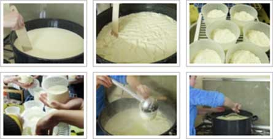

Atelier fromage : un atelier vivant !
Lundi 06 juin 2016
Alimentation durable
Lundi 06 juin 2016
Alimentation durable
Mensarum enim voragines et varias voluptatum inlecebras, ne longius progrediar, praetermitto illuc transiturus quod quidam per ampla spatia urbis subversasque silices sine periculi metu properantes equos velut publicos signatis quod dicitur calceis agitant, familiarium agmina tamquam praedatorios globos post terga trahentes ne Sannione quidem, ut ait comicus, domi relicto. quos imitatae matronae complures opertis capitibus et basternis per latera civitatis cuncta discurrunt.
Thalassius vero ea tempestate praefectus praetorio praesens ipse quoque adrogantis ingenii, considerans incitationem eius ad multorum augeri discrimina, non maturitate vel consiliis mitigabat.